| ・ ベーコン (R03.04.08) | |||
サーミスター温度計を燻製機にいれて燻製チップを置いたホットプレートをArduinoでONOFF制御。准教授の人が今年度から開講する先端工業計測論で必要とのこと。 |
|||
|
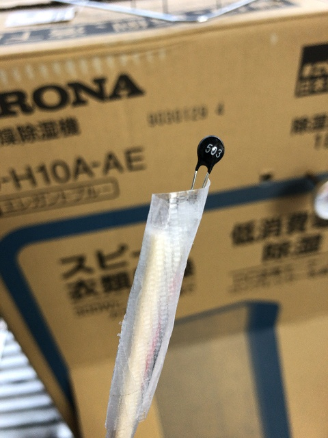
熱電対は細かい測定できないのでサーミスターに |
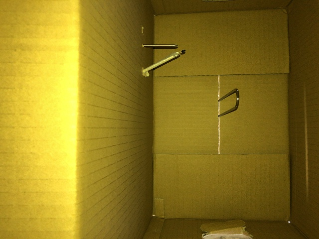
アナログの温度計と近い位置に設置 | ||
|
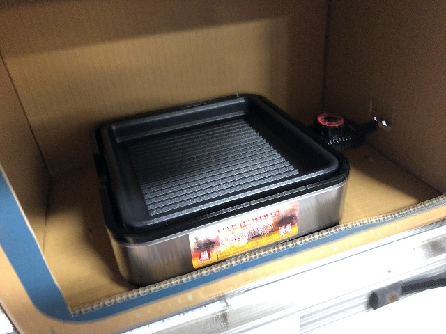
ホットプレートは半導体リレーでONOFF |
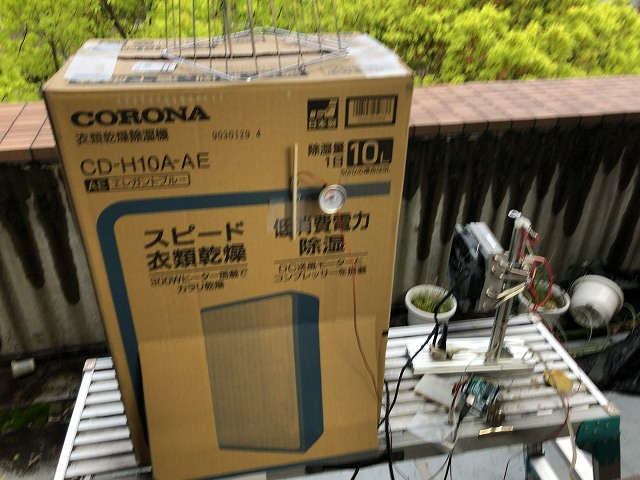
システム完成 | ||
|
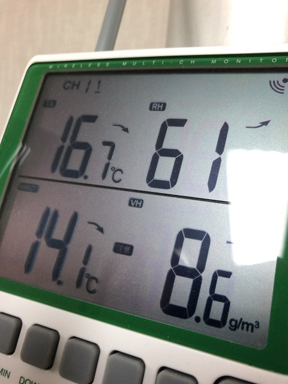
外気温14℃ |
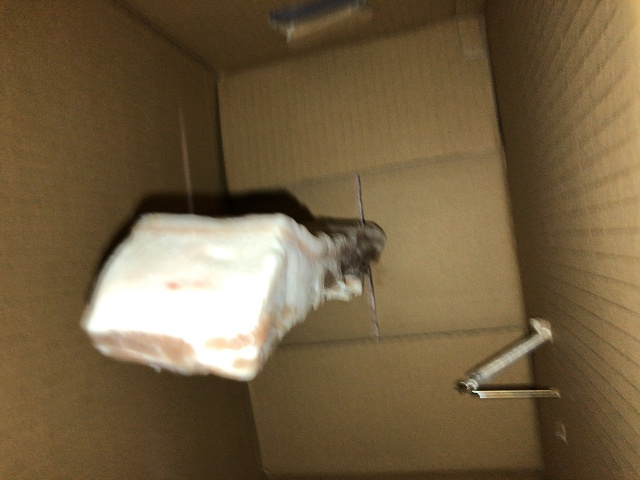
前処理済みの豚肉 | ||
|
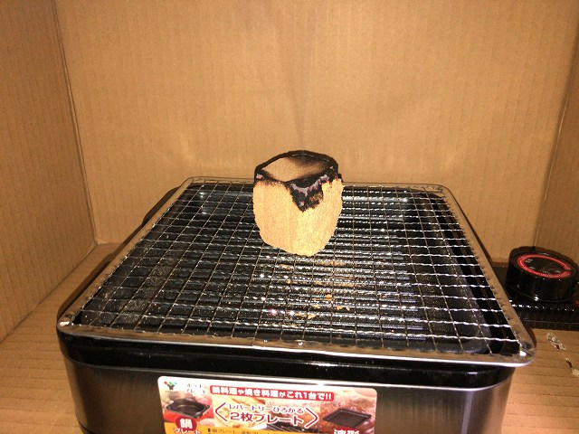
温燻で |
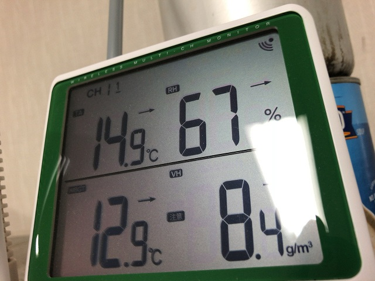
外気下がってきた | ||
|
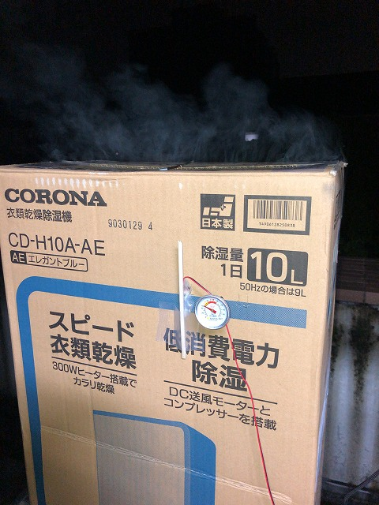
煙漏れてる |
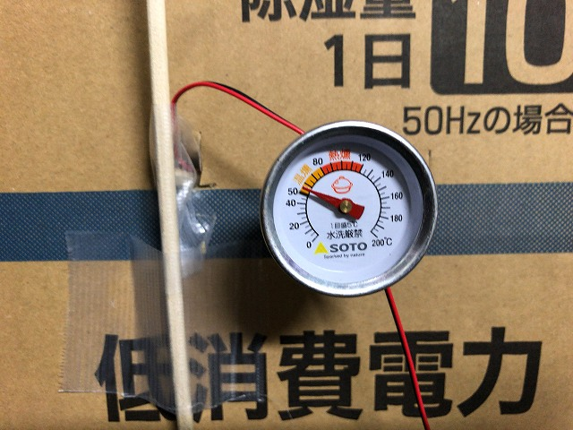
昇温中 | ||
|
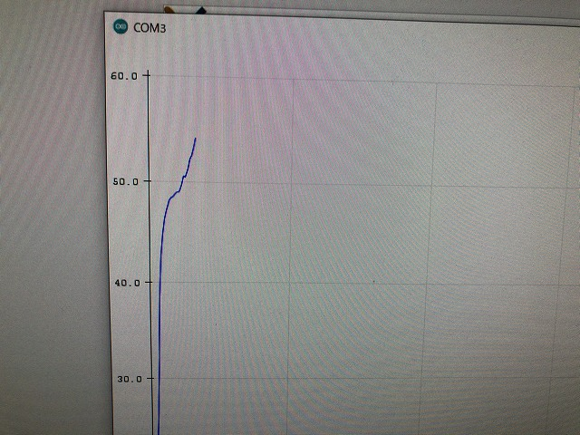
目標は65℃ |
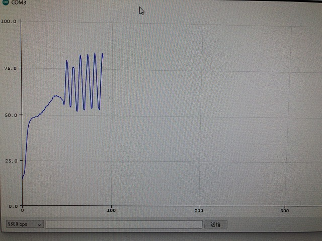
完璧なONOFF | ||
|
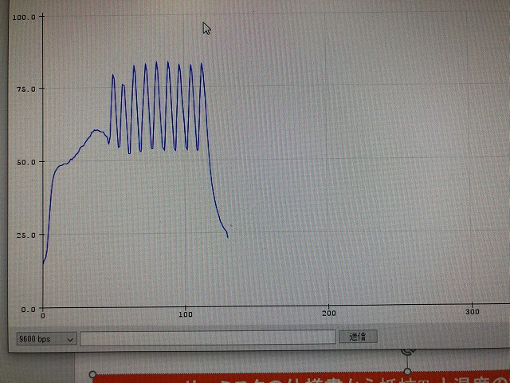
ギザギザみたくて観測時間長くしたそうです |
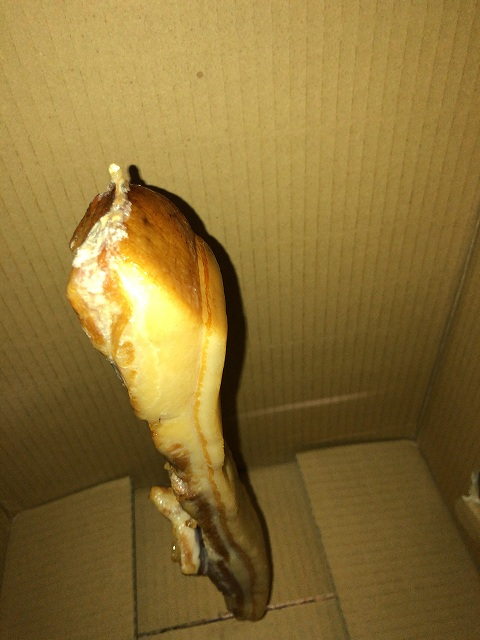
良い感じ | ||
|
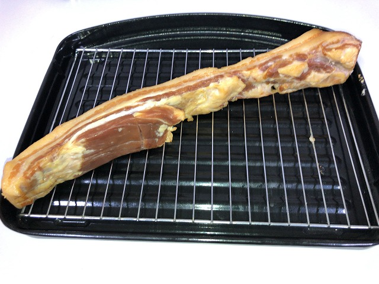
水分飛んでいます |
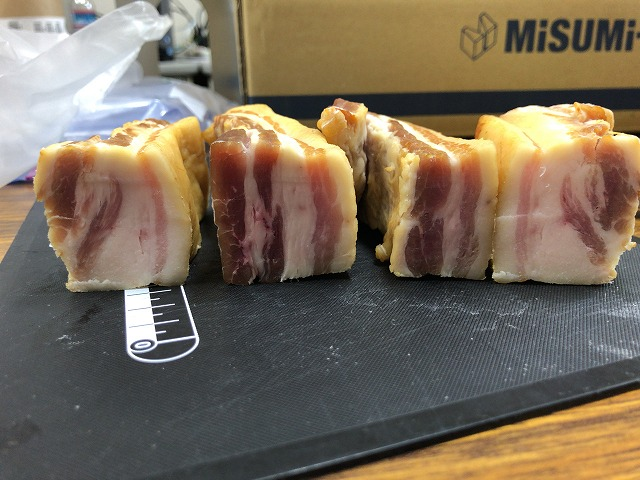
断面も良い感じ | ||
|
スープにしてみました。市販と全く違う。 |
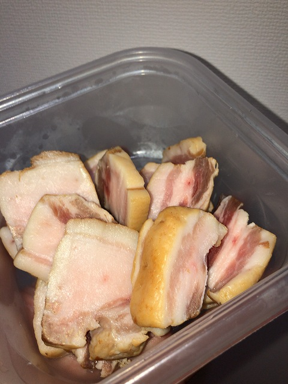
料理で調味料に使える | ||